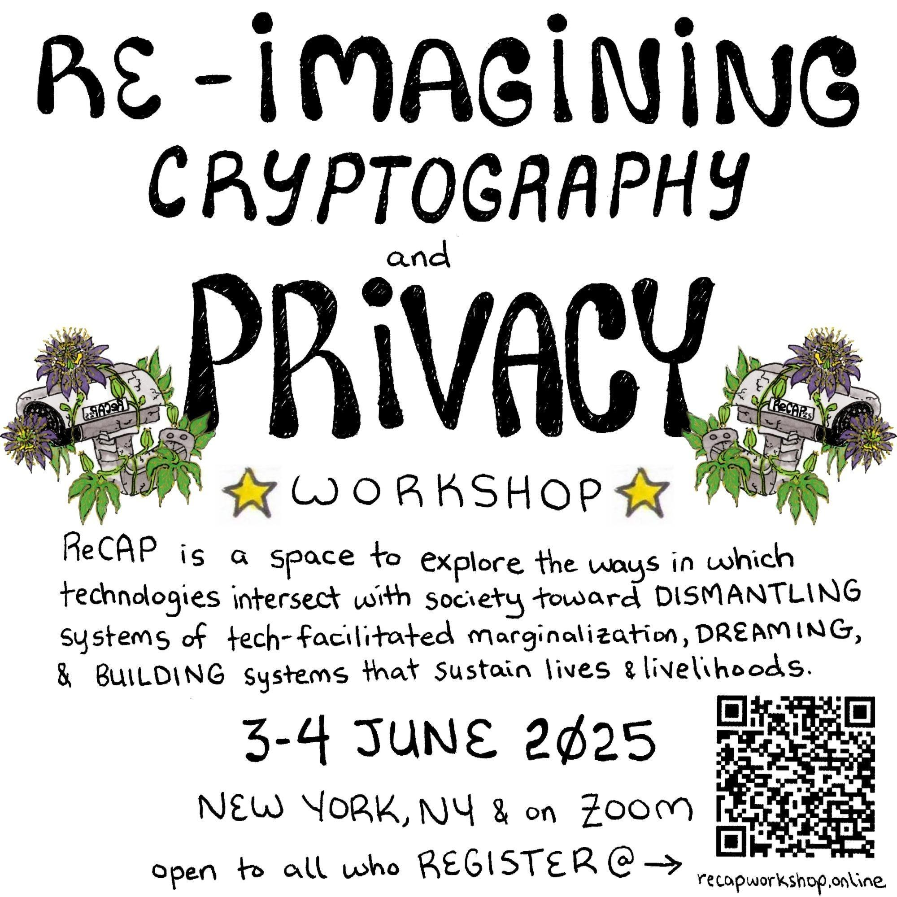

Re-Imagining Cryptography and Privacy (ReCAP) Workshop
The Re-Imagining Cryptography and Privacy (ReCAP) Workshop explores the ways in which cryptography and privacy intersect with society toward designing, creating, and sustaining technologies that explicitly benefit marginalized communities. We welcome work and perspectives from social scientists, humanities scholars, community organizations, and technologists. The focus of the ReCAP Workshop is Re-Imagination: identifying the aspects of cryptography and privacy technology production that contribute to marginalization, and solidifying approaches, ideas, and designs that center marginalized voices, resist toxic aspects of technology production and work toward dismantling systems of marginalization. The ReCAP Workshop seeks to build and sustain a diverse community that is committed to the broadening of access to the field and engaging in socially-conscious work.
ReCAP 2025 is a hybrid workshop from June 3-4, 2025 that will take place physically in The City College of New York, in Steinman Hall Room ST-124 (275 Convent Ave, New York, NY 10031) and virtually on Zoom.
Registration
The workshop is open to all who register. The online registration form has closed. Please email us at recapworkshop@protonmail.com if you would still like to attend and we will provide you the relevant information.
Contributions
Please find the list of contributions organized by session topic below. For contributions from multiple individuals, the speaker's name is underlined. When provided, we have added additional links for speakers.
- Privacy and Systems of Power: Systems of power, while amplified by certain technologies, exist beyond a singular realm of study and cannot be deconstructed or re-imagined only along a single axis. This session serves as a space for understanding the realities of communities who resist systems of power, and for resistance mechanisms that center the expertise of marginalized communities over technical solutions.
- Privacy Applications & Infrastructure: How do we think about, talk about, design, build, and sustain cryptography and privacy tools that meet the needs of individuals and groups of people? How might existing practices of threat modeling, protocol design, and deployment in cryptography and privacy flatten, miss, or undermine people's needs?
- Community Voices: This session creates space for people working from within community organizations or for individuals with marginalized intersections of identity to share their experiences with harms relating to privacy or surveillance. Additionally, we hope for this to be an opportunity to drive further community engagement and relationship building. We will prioritize those outside of academia to share their perspectives in this session.
| Contribution Title | Contributor(s) |
|---|---|
| Between Safety and Surveillance: Third-Party Device Monitoring and Student Privacy | Daniel Flyer, Sam Hafferty, Nitya Nadgir |
| Privacy, Security and Advocacy in the Philippines | Mikaela Brough |
| Societal Foundations of Cryptography | Martin R. Albrecht and Rikke Bjerg Jensen |
| May Your PETs not Wash Away Your Rights | Kris Shrishak and Hinako Sugiyama |
| Avoiding the Wrong Kind of Attention: A Look At Privacy Behaviors of Chinese Fandom Communities in a Censored and Surveilled Internet | Kelly Wang, Ruochen Liu, Amanda Tu, Ada Lerner, Tianshi Li, Abigail Marsh |
| Contribution Title | Contributor(s) |
|---|---|
| What is a privacy success? | Glencora Borradaile |
| Delete Spotify. Build a Server with Your Friends. | Jack Carrick |
| Keyhive: Coordination-Free Access Control for Local-First Apps | Brooklyn Zelenka, Alex Good, John Mumm |
| Protocols, not platforms... but the API first! | Theia Henderson |
| The PET Paradox: How Amazon Instrumentalises PETs in Sidewalk to Entrench Its Infrastructural Power | Thijmen van Gend, Seda Gürses, Donald Jay Bertulfo |
| No One Marches Randomly: A Holistic Rebuild of Protest Mobility Models During Internet Shutdowns | Cora Rowena Ruiz, Sarah Radway, David Inyangson, Tushar M. Jois, Nelly Fazio, James Mickens |
Schedule
All times are listed in EDT (UTC-4). Schedule may be subject to minor changes. Talks that will be recorded are indicated by the 🎥 icon next to the title name.Tuesday (June 3, 2025)
| Time | Activity/Session Title | Speaker(s) |
|---|---|---|
| 8:30-9:30AM | Check-In & Breakfast (provided for in-person attendees) | |
| 9:30-10:00AM | Opening Remarks & Activity | ReCAP Organizers |
| 10:00-10:30AM | Avoiding the Wrong Kind of Attention: A Look At Privacy Behaviors of Chinese Fandom Communities in a Censored and Surveilled Internet 🎥 | Kelly Wang |
| 10:30-10:45AM | Break | |
| 10:45-11:15AM | Privacy, Security and Advocacy in the Philippines | Mikaela Brough |
| 11:15-11:45AM | May Your PETs not Wash Away Your Rights 🎥 | Hinako Sugiyama |
| 11:45-12:00PM | Break | |
| 12:00-12:30M | What is a privacy success? 🎥 | Glencora Borradaile |
| 12:30-1:00PM | The PET Paradox: How Amazon Instrumentalises PETs in Sidewalk to Entrench Its Infrastructural Power 🎥 | Thijmen van Gend, Seda Gürses, Donald Jay Bertulfo |
| 1-2:30PM | Lunch (on your own) | |
| 2:30-3:00PM | Societal Foundations of Cryptography | Martin R. Albrecht and Rikke Bjerg Jensen |
| 3:00-3:30PM | Between Safety and Surveillance: Third-Party Device Monitoring and Student Privacy 🎥 | Daniel Flyer, Sam Hafferty, Nitya Nadgir |
| 3:30-5:00PM | Small Group Breakouts |
Wednesday (June 4, 2025)
| Time | Activity/Session Title | Speaker(s) |
|---|---|---|
| 8:30-9:30AM | Check-In & Breakfast (provided for in-person attendees) | |
| 9:30-10:00AM | Protocols, not platforms... but the API first! 🎥 | Theia Henderson |
| 10:00-10:30AM | No One Marches Randomly: A Holistic Rebuild of Protest Mobility Models During Internet Shutdowns 🎥 | Cora Rowena Ruiz |
| 10:30-10:45AM | Break | |
| 10:45-11:15AM | Optimizing Versus Organizing: How Data and Communication Tools Reconfigure the Workplace and the Union 🎥 | Frederick Reiber |
| 11:15-11:45AM | Delete Spotify. Build a Server with Your Friends 🎥 | Jack Carrick |
| 11:45-12:00PM | Break | |
| 12:00-12:30M | Keyhive: Coordination-Free Access Control for Local-First Apps 🎥 | Brooklyn Zelenka |
| 12:30-1:00PM | Community Privacy Residency: What we learned in a month of co-creation 🎥 | Riley Wong, Ying Tong Lai, Janabel Xia |
| 1-2:30PM | Lunch (on your own) | |
| 2:30-4:30PM | Open Problems & Emerging Work | |
| 4:30-5:00PM | Concluding remarks & activity | ReCAP Organizers |
Informal Discussion Sessions
ReCAP 2025 will feature two informal spaces for discussion. Participation does not require any formal submission. More information will be made available to attendees closer to the workshop.Open Problems & Emerging Work: This session is a space discuss and gather input from ReCAP attendees on new problems or ongoing work. This session will be structured as a series of lightning talks followed by group discussions.
- Is there a question or problem you would like to discussion with ReCAP attendees?
- Are you looking for potential collaborations, especially outside your area of expertise?
Logistics
- The workshop will be free to registrants with financial need and sliding scale for those who are able to contribute. More information about registration will be available in early April.
- We emphasize that this is a hybrid workshop. Speakers are welcome to present in-person or virtually.
- The Zoom link and physical location will be shared with registrants closer to the event. The physical location will be in upper Manhattan/Harlem.
- Speakers can decide what information is shared on the ReCAP website about their talk (with the option to share no information). Speakers will also have the option to record their talk or not.
- We encourage regional meet-ups! If you'd like to host one, please reach out to us via recapworkshop@protonmail.com
Organizing Committee
Coordination
Visioning
- Alishah Chator
- Daniel Escudero
- Guillermo Pascual Pérez
- Lucy Qin
- Leah Namisa Rosenbloom
- Cora Rowena Ruiz
- Kelly Wang
- Riley Wong
- Madelyne Xiao
Reviews
Logistics
- Alishah Chator
- Daniel Escudero
- Daniel Kahn Gillmor
- Lucy Qin
- Leah Namisa Rosenbloom
- Cora Rowena Ruiz
- Kelly Wang
- Riley Wong
- Madelyne Xiao
Local Organizing
- Tushar Jois
- Cora Rowena Ruiz
Other
- Want to re-visit ReCAP 2024? Any available videos, artifacts, slides, etc. are now live! Please see the link for each contribution to find out more.
- We're seeking volunteers and sources of funding. Please feel free to get in touch via the contact information below.
Contact Organizers
- General Inquiries: recapworkshop@protonmail.com
- Alishah Chator, Boston University
- Leah Namisa Rosenbloom, Northeastern University
- Lucy Qin, Georgetown University